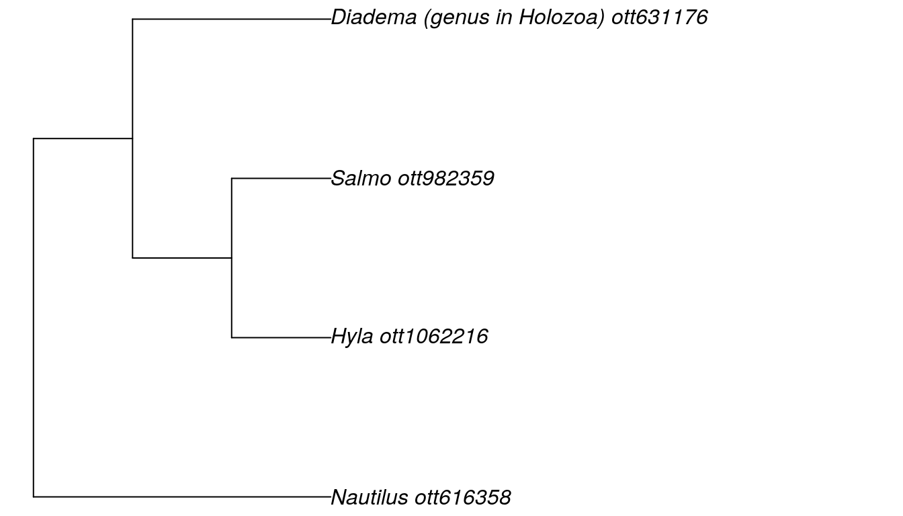
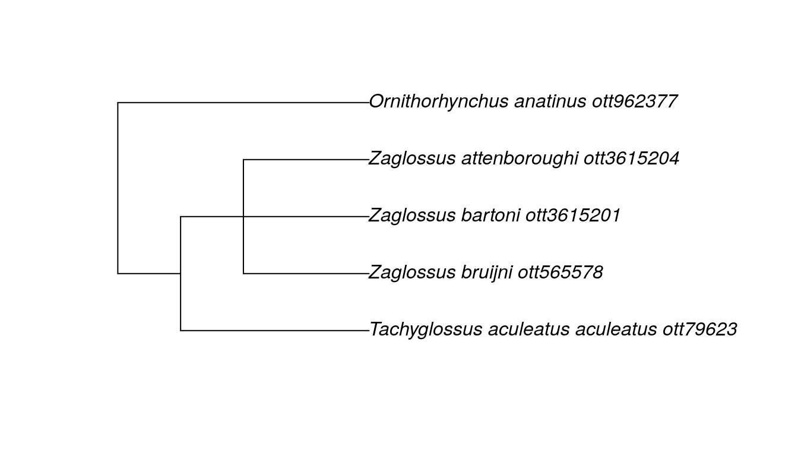
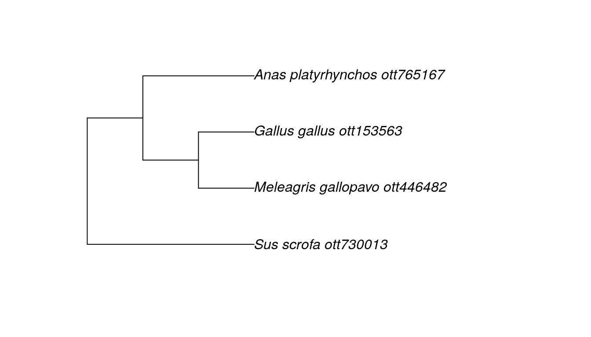

vignettes/how-to-use-rotl.Rmd
how-to-use-rotl.Rmdrotl provides an interface to the Open Tree of Life (OTL) API and allows users to query the API, retrieve parts of the Tree of Life and integrate these parts with other R packages.
The OTL API provides services to access:
ott ids).In rotl, each of these services correspond to functions with different prefixes:
| Service |
rotl prefix |
|---|---|
| Tree of Life | tol_ |
| TNRS | tnrs_ |
| Taxonomy | taxonomy_ |
| Studies | studies_ |
rotl also provides a few other functions and methods that can be used to extract relevant information from the objects returned by these functions.
The most common use for rotl is probably to start from a list of species and get the relevant parts of the tree for these species. This is a two step process:
ott_id (the Open Tree Taxonomy identifiers) using the Taxonomic name resolution services (TNRS)ott_id will then be used to retrieve the relevant parts of the Tree of Life.ott_id
Let’s start by doing a search on a diverse group of taxa: a tree frog (genus Hyla), a fish (genus Salmo), a sea urchin (genus Diadema), and a nautilus (genus Nautilus).
library(rotl)
taxa <- c("Hyla", "Salmo", "Diadema", "Nautilus")
resolved_names <- tnrs_match_names(taxa)It’s always a good idea to check that the resolved names match what you intended:
| search_string | unique_name | approximate_match | ott_id | is_synonym | flags | number_matches |
|---|---|---|---|---|---|---|
| hyla | Hyla | FALSE | 1062216 | FALSE | 1 | |
| salmo | Salmo | FALSE | 982359 | FALSE | 1 | |
| diadema | Diadema (genus in Holozoa) | FALSE | 631176 | FALSE | 5 | |
| nautilus | Nautilus | FALSE | 616358 | FALSE | 1 |
The column unique_name sometimes indicates the higher taxonomic level associated with the name. The column number_matches indicates the number of ott_id that corresponds to a given name. In this example, our search on Diadema returns 2 matches, and the one returned by default is indeed the sea urchin that we want for our query. The argument context_name allows you to limit the taxonomic scope of your search. Diadema is also the genus name of a fungus. To ensure that our search is limited to animal names, we could do:
If you are trying to build a tree with deeply divergent taxa that the argument context_name cannot fix, see “How to change the ott ids assigned to my taxa?” in the FAQ below.
Now that we have the correct ott_id for our taxa, we can ask for the tree using the tol_induced_subtree() function. By default, the object returned by tol_induced_subtree is a phylo object (from the ape package), so we can plot it directly.
## Warning in collapse_singles(tr, show_progress): Dropping singleton nodes
## with labels: Protostomia ott189832, mrcaott24ott6612, Lophotrochozoa
## ott155737, mrcaott24ott56, mrcaott56ott5497, Mollusca ott802117,
## mrcaott56ott1881, mrcaott1881ott102410, Cephalopoda ott7368, Nautiloidea
## ott854446, Nautilida ott854452, Nautilidae ott616361, Chordata ott125642,
## mrcaott42ott658, Craniata (subphylum in Deuterostomia) ott947318,
## Vertebrata (subphylum in Opisthokonta) ott801601, Gnathostomata (superclass
## in phylum Chordata) ott278114, Teleostomi ott114656, Sarcopterygii
## ott458402, Dipnotetrapodomorpha ott4940726, Tetrapoda ott229562, Amphibia
## ott544595, Batrachia ott471197, Anura (order in Opisthokonta) ott991547,
## mrcaott114ott3129, mrcaott114ott37876, mrcaott114ott18818, Neobatrachia
## ott535804, mrcaott114ott309463, mrcaott114ott177, mrcaott177ott7464,
## mrcaott177ott2199, mrcaott177ott29310, mrcaott177ott1321, Hylidae
## ott535782, mrcaott177ott17126, mrcaott177ott22852, mrcaott177ott2732,
## mrcaott2732ott3289, mrcaott3289ott40328, mrcaott3289ott173489,
## mrcaott3289ott110534, mrcaott3289ott489758, mrcaott3289ott59160,
## Actinopterygii ott773483, Actinopteri ott285821, Neopterygii
## ott471203, Teleostei ott212201, Osteoglossocephalai ott5506109,
## Clupeocephala ott285819, Euteleosteomorpha ott5517919, mrcaott274ott392,
## mrcaott274ott595, Protacanthopterygii ott1024043, mrcaott274ott3887,
## mrcaott3887ott9371, Salmoniformes ott216171, Salmonidae ott739933,
## mrcaott3887ott28511, Salmoninae ott936925, mrcaott360ott10516,
## Echinodermata ott451020, Eleutherozoa ott317277, Echinozoa ott669475,
## Echinoidea ott669472, Diadematacea ott631171, Diadematoida ott631174,
## Diadematidae ott631173
If you realize that tnrs_match_names assigns the incorrect taxonomic group to your name (e.g., because of synonymy) and changing the context_name does not help, you can use the function inspect. This function takes the object resulting from tnrs_match_names(), and either the row number, the taxon name (you used in your search in lowercase), or the ott_id returned by the initial query.
To illustrate this, let’s re-use the previous query but this time pretending that we are interested in the fungus Diadema and not the sea urchin:
taxa <- c("Hyla", "Salmo", "Diadema", "Nautilus")
resolved_names <- tnrs_match_names(taxa)
resolved_names## search_string unique_name approximate_match ott_id
## 1 hyla Hyla FALSE 1062216
## 2 salmo Salmo FALSE 982359
## 3 diadema Diadema (genus in Holozoa) FALSE 631176
## 4 nautilus Nautilus FALSE 616358
## is_synonym flags number_matches
## 1 FALSE 1
## 2 FALSE 1
## 3 FALSE 5
## 4 FALSE 1## search_string unique_name approximate_match
## 1 diadema Diadema (genus in Nucletmycea) FALSE
## 2 diadema Diadema (genus in Holozoa) FALSE
## 3 diadema Garrettia (genus in Opisthokonta) FALSE
## 4 diadema Diademoides FALSE
## 5 diadema Hypolimnas FALSE
## ott_id is_synonym flags number_matches
## 1 4930522 FALSE 5
## 2 631176 FALSE 5
## 3 6356093 TRUE 5
## 4 4024672 TRUE SIBLING_HIGHER 5
## 5 643831 TRUE 5In our case, we want the second row in this data frame to replace the information that initially matched for Diadema. We can now use the update() function, to change to the correct taxa (the fungus not the sea urchin):
resolved_names <- update(resolved_names, taxon_name = "diadema",
new_row_number = 2)
## we could also have used the ott_id to replace this taxon:
## resolved_names <- update(resolved_names, taxon_name = "diadema",
## new_ott_id = 4930522)And now our resolved_names data frame includes the taxon we want:
| search_string | unique_name | approximate_match | ott_id | is_synonym | flags | number_matches |
|---|---|---|---|---|---|---|
| hyla | Hyla | FALSE | 1062216 | FALSE | 1 | |
| salmo | Salmo | FALSE | 982359 | FALSE | 1 | |
| diadema | Diadema (genus in Holozoa) | FALSE | 631176 | FALSE | 5 | |
| nautilus | Nautilus | FALSE | 616358 | FALSE | 1 |
The function taxonomy_taxon_info() takes ott_ids as arguments and returns taxonomic information about the taxa. This output can be passed to some helpers functions to extract the relevant information. Let’s illustrate this with our Diadema example
## $`Diadema (genus in Holozoa)`
## [1] "genus"
##
## attr(,"class")
## [1] "otl_rank" "list"## $`Diadema (genus in Holozoa)`
## [1] "Centrechinus" "Centrechinus (Diadema)"
## [3] "Cidaris (Diadema)" "Diamema"
##
## attr(,"class")
## [1] "otl_synonyms" "list"## $`Diadema (genus in Holozoa)`
## [1] "Diadema"
##
## attr(,"class")
## [1] "otl_name" "list"In some cases, it might also be useful to investigate the taxonomic tree descending from an ott_id to check that it’s the correct taxon and to determine the species included in the Open Tree Taxonomy:
## $tip_label
## [1] "Diadema_sp._seto17_ott587478"
## [2] "Diadema_sp._DSM1_ott219999"
## [3] "Diadema_paucispinum_ott312263"
## [4] "Diadema_mexicanum_ott639130"
## [5] "Diadema_sp._dsm5_ott587480"
## [6] "Diadema_sp._DSM8_ott587486"
## [7] "Diadema_sp._DSM2_ott587483"
## [8] "Diadema_sp._DSM6_ott771059"
## [9] "Diadema_sp._DSM7_ott587487"
## [10] "Diadema_sp._seto18_ott66623"
## [11] "Diadema_sp._seto16_ott312262"
## [12] "Diadema_sp._seto9_ott587485"
## [13] "Diadema_sp._seto38_ott66625"
## [14] "Diadema_setosum_ott631175"
## [15] "Diadema_sp._seto19_ott66624"
## [16] "Diadema_sp._DJN9_ott66626"
## [17] "Diademasp.CS-2014ott5502179"
## [18] "Diadema_savignyi_ott395692"
## [19] "Diadema_sp._SETO15_ott587479"
## [20] "Diadema_palmeri_ott836860"
## [21] "Diadema_sp._seto35_ott66618"
## [22] "Diadema_sp._DSM4_ott587481"
## [23] "Diadema_sp._DSM3_ott587482"
## [24] "Diadema_antillarum_antillarum_ott4147370"
## [25] "Diadema_antillarum_scensionis_ott220009"
## [26] "Diadema_africanum_ott4147369"
## [27] "Diadema_sp._seto10_ott587484"
## [28] "Diadema_vetus_ott5725747"
## [29] "Diadema_principeana_ott5725746"
## [30] "Diadema_ascensionis_ott4950423"
## [31] "Diadema_lobatum_ott4950422"
## [32] "Diadema_pseudodiadema_ott4950421"
## [33] "Diadema_africana_ott5502180"
##
## $edge_label
## [1] "Diadema_antillarum_ott1022356" "'Diadema(genusinHolozoa"
## [3] "ott631176'"By default, this function return all taxa (including self, and internal) descending from this ott_id but it also possible to return phylo object.
If you are looking to get the tree for a particular taxonomic group, you need to first identify it by its node id or ott id, and then use the tol_subtree() function:
## Warning in collapse_singles(tr, show_progress): Dropping singleton nodes
## with labels: Tachyglossus ott16047, Tachyglossus aculeatus ott16038,
## Ornithorhynchidae ott344066, Ornithorhynchus ott962391
The function studies_find_trees() allows the user to search for studies matching a specific criteria. The function studies_properties() returns the list of properties that can be used in the search.
furry_studies <- studies_find_studies(property="ot:focalCladeOTTTaxonName", value="Mammalia")
furry_ids <- furry_studies$study_idsNow that we know the study_id, we can ask for the meta data information associated with this study:
furry_meta <- get_study_meta("pg_2550")
get_publication(furry_meta) ## The citation for the source of the study## [1] "O'Leary, Maureen A., Marc Allard, Michael J. Novacek, Jin Meng, and John Gatesy. 2004. \"Building the mammalian sector of the tree of life: Combining different data and a discussion of divergence times for placental mammals.\" In: Cracraft J., & Donoghue M., eds. Assembling the Tree of Life. pp. 490-516. Oxford, United Kingdom, Oxford University Press."
## attr(,"DOI")
## [1] ""## [1] "tree5513" "tree5515" "tree5516" "tree5517" "tree5518" "tree5519"
## [7] "tree5520" "tree5521" "tree5522" "tree5523"## NULLUsing get_study("pg_2550") would returns a multiPhylo object (default) with all the trees associated with this particular study, while get_study_tree("pg_2550", "tree5513") would return one of these trees.
You may encounter the following error message:
Error in rncl(file = file, ...) : Taxon number 39 (coded by the token Pratia
angulata) has already been encountered in this tree. Duplication of taxa in a
tree is prohibited.This message occurs as duplicate labels are not allowed in the NEXUS format and it is stricly enforced by the part of the code used by rotl to import the trees in memory.
If you use a version of rotl more recent than 0.4.1, this should not happen by default for the function get_study_tree. If it happens with another function, please let us know.
The easiest way to work around this is to save the tree in a file, and use APE to read it in memory:
If you encounter a taxon name you are not familiar with, it might be useful to obtain its higher taxonomy to see where it fits in the tree of life. We can combine several taxonomy methods to extract this information easily.
giant_squid <- tnrs_match_names("Architeuthis")
tax_lineage(taxonomy_taxon_info(ott_id(giant_squid), include_lineage = TRUE))## $`564394`
## rank name unique_name ott_id
## 1 family Architeuthidae Architeuthidae 564393
## 2 suborder Oegopsina Oegopsina 43352
## 3 order Teuthida Teuthida 380472
## 4 superorder Decapodiformes Decapodiformes 854107
## 5 infraclass Neocoleoidea Neocoleoidea 329546
## 6 subclass Coleoidea Coleoidea 7371
## 7 class Cephalopoda Cephalopoda 7368
## 8 phylum Mollusca Mollusca 802117
## 9 no rank Lophotrochozoa Lophotrochozoa 155737
## 10 no rank Protostomia Protostomia 189832
## 11 no rank Bilateria Bilateria 117569
## 12 no rank Eumetazoa Eumetazoa 641038
## 13 kingdom Metazoa Metazoa 691846
## 14 no rank Holozoa Holozoa 5246131
## 15 no rank Opisthokonta Opisthokonta 332573
## 16 domain Eukaryota Eukaryota 304358
## 17 no rank cellular organisms cellular organisms 93302
## 18 no rank life life 805080rotl missing from an induced subtree?Some taxonomic names that can be retrieved through the taxonomic name resolution service are not part of the Open Tree’s synthesis tree. These are usually traditional higher-level taxa that have been found to be paraphyletic.
For instance, if you wanted to fetch a tree relating the three birds that go into a Turkducken as well as the pork used for stuffing, you might search for the turkey, duck, chicken, and pork genera:
turducken <- c("Meleagris", "Anas", "Gallus", "Sus")
taxa <- tnrs_match_names(turducken, context="Animals")
taxa## search_string unique_name approximate_match ott_id is_synonym flags
## 1 meleagris Meleagris FALSE 446481 FALSE
## 2 anas Anas FALSE 765185 FALSE
## 3 gallus Gallus FALSE 153562 FALSE
## 4 sus Sus FALSE 730021 FALSE
## number_matches
## 1 2
## 2 1
## 3 3
## 4 1We have the OTT ids for each genus, however, if we tried to get the induced subtree from these results, we would get an error:
## Warning in collapse_singles(tr, show_progress): Dropping singleton nodes
## with labels: Mammalia ott244265, Theria (subclass in Deuterostomia)
## ott229558, Eutheria (in Deuterostomia) ott683263, Boreoeutheria ott5334778,
## Laurasiatheria ott392223, mrcaott1548ott4697, mrcaott1548ott6790,
## mrcaott1548ott3021, Cetartiodactyla ott622916, mrcaott1548ott21987,
## Suina ott916745, Suidae ott730008, Sauropsida ott639642, Sauria (order in
## Opisthokonta) ott329823, Archelosauria ott4947372, Archosauria ott335588,
## Dinosauria ott90215, Coelurosauria ott664351, Theropoda ott664350,
## Saurischia ott90223, Aves ott81461, Neognathae ott241846, Galliformes
## ott837585, mrcaott4765ott75785, mrcaott4765ott104461, mrcaott4765ott151684,
## mrcaott4765ott54193, mrcaott4765ott49319, mrcaott4765ott415487,
## mrcaott4765ott51354, mrcaott4765ott53700, mrcaott4765ott446490,
## Meleagridinae ott781250, mrcaott49310ott102705, mrcaott49310ott51349,
## mrcaott49310ott153554, mrcaott153554ott867027, Anseriformes ott241841,
## mrcaott30843ott714464, Anatidae ott765193, mrcaott30843ott75874,
## mrcaott30843ott962771, mrcaott30843ott145504, mrcaott30843ott30847,
## mrcaott30843ott196654, mrcaott30843ott30845As the error message suggests, some of the taxa are not found in the synthetic tree. This occurs for 2 main reasons: either the taxa is invalid, or it is part of a group that is not monophyletic in the synthetic tree. There are two ways to get around this issue: (1) removing the taxa that are not part of the Open Tree; (2) using the complete species name.
To help with this situation, rotl provides a way to identify the OTT ids that are not part of the synthetic tree. The function is_in_tree() takes the output of the ott_id() function and returns a vector of logical indicating whether the taxa are part of the synthetic tree. We can then use to only keep the taxa that appear in the synthetic tree:
## Meleagris Anas Gallus Sus
## TRUE FALSE TRUE TRUE## Warning in collapse_singles(tr, show_progress): Dropping singleton nodes
## with labels: Mammalia ott244265, Theria (subclass in Deuterostomia)
## ott229558, Eutheria (in Deuterostomia) ott683263, Boreoeutheria ott5334778,
## Laurasiatheria ott392223, mrcaott1548ott4697, mrcaott1548ott6790,
## mrcaott1548ott3021, Cetartiodactyla ott622916, mrcaott1548ott21987,
## Suina ott916745, Suidae ott730008, Sauropsida ott639642, Sauria (order
## in Opisthokonta) ott329823, Archelosauria ott4947372, Archosauria
## ott335588, Dinosauria ott90215, Coelurosauria ott664351, Theropoda
## ott664350, Saurischia ott90223, Aves ott81461, Neognathae ott241846,
## Galloanserae ott5839486, Galliformes ott837585, mrcaott4765ott75785,
## mrcaott4765ott104461, mrcaott4765ott151684, mrcaott4765ott54193,
## mrcaott4765ott49319, mrcaott4765ott415487, mrcaott4765ott51354,
## mrcaott4765ott53700, mrcaott4765ott446490, Meleagridinae ott781250,
## mrcaott49310ott102705, mrcaott49310ott51349, mrcaott49310ott153554,
## mrcaott153554ott867027The best way to avoid these problems is to specify complete species names (species being the lowest level of classification in the Open Tree taxonomy they are guaranteed to be monophyletic):
turducken_spp <- c("Meleagris gallopavo", "Anas platyrhynchos", "Gallus gallus", "Sus scrofa")
taxa <- tnrs_match_names(turducken_spp, context="Animals")
tr <- tol_induced_subtree(ott_id(taxa))## Warning in collapse_singles(tr, show_progress): Dropping singleton nodes
## with labels: Mammalia ott244265, Theria (subclass in Deuterostomia)
## ott229558, Eutheria (in Deuterostomia) ott683263, Boreoeutheria ott5334778,
## Laurasiatheria ott392223, mrcaott1548ott4697, mrcaott1548ott6790,
## mrcaott1548ott3021, Cetartiodactyla ott622916, mrcaott1548ott21987, Suina
## ott916745, Suidae ott730008, Sus ott730021, Sauropsida ott639642, Sauria
## (order in Opisthokonta) ott329823, Archelosauria ott4947372, Archosauria
## ott335588, Dinosauria ott90215, Coelurosauria ott664351, Theropoda
## ott664350, Saurischia ott90223, Aves ott81461, Neognathae ott241846,
## Galliformes ott837585, mrcaott4765ott75785, mrcaott4765ott104461,
## mrcaott4765ott151684, mrcaott4765ott54193, mrcaott4765ott49319,
## mrcaott4765ott415487, mrcaott4765ott51354, mrcaott4765ott53700,
## mrcaott4765ott446490, Meleagridinae ott781250, Meleagris ott446481,
## mrcaott49310ott102705, mrcaott49310ott51349, mrcaott49310ott153554,
## mrcaott153554ott867027, Gallus ott153562, mrcaott153554ott153572,
## mrcaott153572ott240568, Anseriformes ott241841, mrcaott30843ott714464,
## Anatidae ott765193, mrcaott30843ott75874, mrcaott30843ott962771,
## mrcaott30843ott145504, mrcaott30843ott30847, mrcaott30843ott196654,
## mrcaott30843ott30845, mrcaott30845ott30850, mrcaott30850ott82420,
## mrcaott30850ott82414, mrcaott30850ott30858, mrcaott30850ott30855,
## mrcaott30850ott604172, mrcaott30850ott82410, mrcaott82410ott339494,
## mrcaott82410ott604175, mrcaott82410ott604182, mrcaott82410ott190881